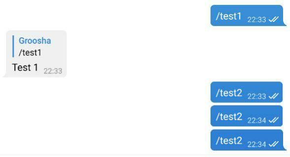

Знакомство с aiogram¶
Используемая версия aiogram: 3.7.0
Некоторые детали сознательно упрощены!
Автор этой книги убеждён, что помимо теории должна быть и практика. Чтобы максимально упростить повторение приведённого далее кода, пришлось пойти на использование подходов, пригодных только для локальной разработки и обучения.
Так, например, во всех или почти во всех главах токен бота будет указываться прямо в исходных текстах. Это плохой подход, поскольку может привести к раскрытию токена, если вы забудете его удалить перед заливкой кода в публичный репозиторий (например, GitHub).
Или иногда в качестве хранилищ данных будут использоваться структуры, расположенные исключительно в оперативной памяти (словари, списки...). В действительности такие объекты нежелательны, поскольку остановка бота приведёт безвозвратной потере данных.
Также механизмом получения апдейтов от Telegram выбран поллинг, поскольку он гарантированно работает в подавляющем большинстве окружений и подходит практически всем разработчикам.
Важно помнить, что автор ставит перед собой цель объяснить именно работу с Telegram Bot API при помощи aiogram, а не вообще весь Computer Science во всём его многообразии.
Терминология¶
Чтобы разговаривать в одних и тех же понятиях, введём некоторые термины, дабы в дальнейшем не путаться:
- ЛС — личные сообщения, в контексте бота это диалог один-на-один с пользователем, а не группа/канал.
- Чат — общее название для ЛС, групп, супергрупп и каналов.
- Апдейт — любое событие из этого списка: сообщение, редактирование сообщения, колбэк, инлайн-запрос, платёж, добавление бота в группу и т.д.
- Хэндлер — асинхронная функция, которая получает от диспетчера/роутера очередной апдейт и обрабатывает его.
- Диспетчер — объект, занимающийся получением апдейтов от Telegram с последующим выбором хэндлера для обработки принятого апдейта.
- Роутер — аналогично диспетчеру, но отвечает за подмножество множества хэндлеров. Можно сказать, что диспетчер — это корневой роутер.
- Фильтр — выражение, которое обычно возвращает True или False и влияет на то, будет вызван хэндлер или нет.
- Мидлварь — прослойка, которая вклинивается в обработку апдейтов.
Установка¶
Для начала давайте создадим каталог для бота, организуем там virtual environment (далее venv) и
установим библиотеку aiogram.
Проверим, что установлен Python версии 3.9 (если вы знаете, что установлен 3.9 и выше, можете пропустить этот раздел):
[groosha@main lesson_01]$ python3.9
Python 3.9.9 (main, Jan 11 2022, 16:35:07)
[GCC 11.1.0] on linux
Type "help", "copyright", "credits" or "license" for more information.
>>> exit()
[groosha@main lesson_01]$
Теперь создадим файл requirements.txt, в котором укажем используемую нами версию aiogram. Также нам понадобится
библиотека pydantic-settings для файлов конфигурации.
О версиях aiogram
В этой главе используется aiogram 3.x, перед началом работы рекомендую заглянуть в канал релизов библиотеки и проверить наличие более новой версии. Подойдёт любая более новая, начинающаяся с цифры 3, поскольку aiogram 2.x более рассматриваться не будет и считается устаревшим.
[groosha@main 01_quickstart]$ python3.11 -m venv venv
[groosha@main 01_quickstart]$ echo "aiogram<4.0" > requirements.txt
[groosha@main 01_quickstart]$ echo "pydantic-settings" >> requirements.txt
[groosha@main 01_quickstart]$ source venv/bin/activate
(venv) [groosha@main 01_quickstart]$ pip install -r requirements.txt
# ...здесь куча строк про установку...
Successfully installed ...тут длинный список...
[groosha@main 01_quickstart]$
Обратите внимание на префикс "venv" в терминале. Он указывает, что мы находимся в виртуальном окружении с именем "venv".
Проверим, что внутри venv вызов команды python указывает на всё тот же Python 3.11:
(venv) [groosha@main 01_quickstart]$ python
Python 3.11.9 (main, Jan 11 2024, 16:35:07)
[GCC 11.1.0] on linux
Type "help", "copyright", "credits" or "license" for more information.
>>> exit()
(venv) [groosha@main 01_quickstart]$ deactivate
[groosha@main 01_quickstart]$
Последней командой deactivate мы вышли из venv, чтобы он нам не мешал.
Если для написания ботов вы используете PyCharm, рекомендую также установить сторонний плагин Pydantic для поддержки автодополнения кода в телеграмных объектах.
Первый бот¶
Давайте создадим файл bot.py с базовым шаблоном бота на aiogram:
import asyncio
import logging
from aiogram import Bot, Dispatcher, types
from aiogram.filters.command import Command
# Включаем логирование, чтобы не пропустить важные сообщения
logging.basicConfig(level=logging.INFO)
# Объект бота
bot = Bot(token="12345678:AaBbCcDdEeFfGgHh")
# Диспетчер
dp = Dispatcher()
# Хэндлер на команду /start
@dp.message(Command("start"))
async def cmd_start(message: types.Message):
await message.answer("Hello!")
# Запуск процесса поллинга новых апдейтов
async def main():
await dp.start_polling(bot)
if __name__ == "__main__":
asyncio.run(main())
Первое, на что нужно обратить внимание: aiogram — асинхронная библиотека, поэтому ваши хэндлеры тоже должны быть асинхронными, а перед вызовами методов API нужно ставить ключевое слово await, т.к. эти вызовы возвращают корутины.
Асинхронное программирование в Python
Не стоит пренебрегать официальной документацией!
Прекрасный туториал по asyncio доступен на сайте Python.
Если вы в прошлом работали с какой-то другой библиотекой для Telegram, например, pyTelegramBotAPI, то концепция
хэндлеров (обработчиков событий) вам сразу станет понятна, разница лишь в том, что в aiogram хэндлерами управляет диспетчер.
Диспетчер регистрирует функции-обработчики, дополнительно ограничивая перечень вызывающих их событий через фильтры.
После получения очередного апдейта (события от Telegram), диспетчер выберет нужную функцию обработки, подходящую по всем
фильтрам, например, «обработка сообщений, являющихся изображениями, в чате с ID икс и с длиной подписи игрек». Если две
функции имеют одинаковые по логике фильтры, то будет вызвана та, что зарегистрирована раньше.
Чтобы зарегистрировать функцию как обработчик сообщений, нужно сделать одно из двух действий:
1. Навесить на неё декоратор, как в примере выше.
С различными типами декораторов мы познакомимся позднее.
2. Напрямую вызвать метод регистрации у диспетчера или роутера.
Рассмотрим следующий код:
# Хэндлер на команду /test1
@dp.message(Command("test1"))
async def cmd_test1(message: types.Message):
await message.reply("Test 1")
# Хэндлер на команду /test2
async def cmd_test2(message: types.Message):
await message.reply("Test 2")
Давайте запустим с ним бота:

Хэндлер cmd_test2 не сработает, т.к. диспетчер о нём не знает. Исправим эту ошибку
и отдельно зарегистрируем функцию:
# Хэндлер на команду /test2
async def cmd_test2(message: types.Message):
await message.reply("Test 2")
# Где-то в другом месте, например, в функции main():
dp.message.register(cmd_test2, Command("test2"))
Снова запустим бота:

Синтаксический сахар¶
Для того чтобы сделать код чище и читабельнее, aiogram расширяет возможности стандартных объектов Telegram.
Например, вместо bot.send_message(...) можно написать message.answer(...) или message.reply(...). В последних
двух случаях не нужно подставлять chat_id, подразумевается, что он такой же, как и в исходном сообщении.
Разница между answer и reply простая: первый метод просто отправляет сообщение в тот же чат, второй делает "ответ" на
сообщение из message:
@dp.message(Command("answer"))
async def cmd_answer(message: types.Message):
await message.answer("Это простой ответ")
@dp.message(Command("reply"))
async def cmd_reply(message: types.Message):
await message.reply('Это ответ с "ответом"')

Более того, для большинства типов сообщений есть вспомогательные методы вида "answer_{type}" или "reply_{type}", например:
@dp.message(Command("dice"))
async def cmd_dice(message: types.Message):
await message.answer_dice(emoji="🎲")
что значит 'message: types.Message' ?
Python является интерпретируемым языком с сильной, но динамической типизацией,
поэтому встроенная проверка типов, как, например, в C++ или Java, отсутствует. Однако начиная с версии 3.5
в языке появилась поддержка подсказок типов, благодаря которой
различные чекеры и IDE вроде PyCharm анализируют типы используемых значений и подсказывают
программисту, если он передаёт что-то не то. В данном случае подсказка types.Message сообщает
PyCharm-у, что переменная message имеет тип Message, описанный в модуле types библиотеки
aiogram (см. импорты в начале кода). Благодаря этому IDE может на лету подсказывать атрибуты и функции.
При вызове команды /dice бот отправит в тот же чат игральный кубик. Разумеется, если его надо отправить в какой-то
другой чат, то придётся по старинке вызывать await bot.send_dice(...). Но объект bot (экземпляр класса Bot) может быть
недоступен в области видимости конкретной функции. В aiogram 3.x объект бота, которому пришёл апдейт, неявно
прокидывается в хэндлер и его можно достать как аргумент bot. Предположим, вы хотите по команде /dice
отправлять кубик не в тот же чат, а в канал с ID -100123456789. Перепишем предыдущую функцию:
# не забудьте про импорт
from aiogram.enums.dice_emoji import DiceEmoji
@dp.message(Command("dice"))
async def cmd_dice(message: types.Message, bot: Bot):
await bot.send_dice(-100123456789, emoji=DiceEmoji.DICE)
Передача доп. параметров¶
Иногда при запуске бота может потребоваться передать одно или несколько дополнительных значений. Это может быть какая-нибудь переменная, объект конфигурации, список чего-то, отметка времени и что угодно ещё. Для этого достаточно передать эти данные как именованные (kwargs) аргументы в диспетчер, либо присвоить значения, как если бы вы работали со словарём.
Такая возможность лучше всего подходит для передачи объектов, которые должны жить в единственном экземпляре и не меняться в ходе работы бота (т.е. быть только для чтения). Если предполагается, что значение должно изменяться со временем, то помните, что это сработает только с мутабельными объектами. Чтобы получить значения в хэндлерах, просто укажите их как аргументы. Рассмотрим на примере:
# Где-то в другом месте
# Например, в точке входа в приложение
from datetime import datetime
# bot = ...
dp = Dispatcher()
dp["started_at"] = datetime.now().strftime("%Y-%m-%d %H:%M")
await dp.start_polling(bot, mylist=[1, 2, 3])
@dp.message(Command("add_to_list"))
async def cmd_add_to_list(message: types.Message, mylist: list[int]):
mylist.append(7)
await message.answer("Добавлено число 7")
@dp.message(Command("show_list"))
async def cmd_show_list(message: types.Message, mylist: list[int]):
await message.answer(f"Ваш список: {mylist}")
@dp.message(Command("info"))
async def cmd_info(message: types.Message, started_at: str):
await message.answer(f"Бот запущен {started_at}")
Теперь переменную started_at и список mylist можно читать и писать в разных хэндлерах. А если вам нужно пробрасывать
уникальные для каждого апдейта значения (например, объект сессии СУБД),
то ознакомьтесь с мидлварями.

Файлы конфигурации¶
Чтобы не хранить токен прямо в коде (вдруг вы захотите залить своего бота в публичный репозиторий?) можно вынести
подобные данные в отдельный конфигурационный файл. Существует хорошее и адекватное мнение,
что для прода достаточно переменных окружения, однако в рамках этой книги мы будем пользоваться отдельными файлами .env,
чтобы немного упростить себе жизнь и сэкономить читателям время на разворачивание демонстрационного проекта.
Итак, создадим рядом с bot.py отдельный файл config_reader.py со следующим содержимым
from pydantic_settings import BaseSettings, SettingsConfigDict
from pydantic import SecretStr
class Settings(BaseSettings):
# Желательно вместо str использовать SecretStr
# для конфиденциальных данных, например, токена бота
bot_token: SecretStr
# Начиная со второй версии pydantic, настройки класса настроек задаются
# через model_config
# В данном случае будет использоваться файла .env, который будет прочитан
# с кодировкой UTF-8
model_config = SettingsConfigDict(env_file='.env', env_file_encoding='utf-8')
# При импорте файла сразу создастся
# и провалидируется объект конфига,
# который можно далее импортировать из разных мест
config = Settings()
Теперь немного отредактируем наш bot.py:
# импорты
from config_reader import config
# Для записей с типом Secret* необходимо
# вызывать метод get_secret_value(),
# чтобы получить настоящее содержимое вместо '*******'
bot = Bot(token=config.bot_token.get_secret_value())
Наконец, создадим файл .env (с точкой в начале), где опишем токен бота:
BOT_TOKEN = 0000000000:AaBbCcDdEeFfGgHhIiJjKkLlMmNn
Если всё сделано правильно, то при запуске python-dotenv подгрузит переменные из файла .env, pydantic
их провалидирует и объект бота успешно создастся с нужным токеном.
На этом мы закончим знакомство с библиотекой, а в следующих главах рассмотрим другие "фишки" aiogram и Telegram Bot API.